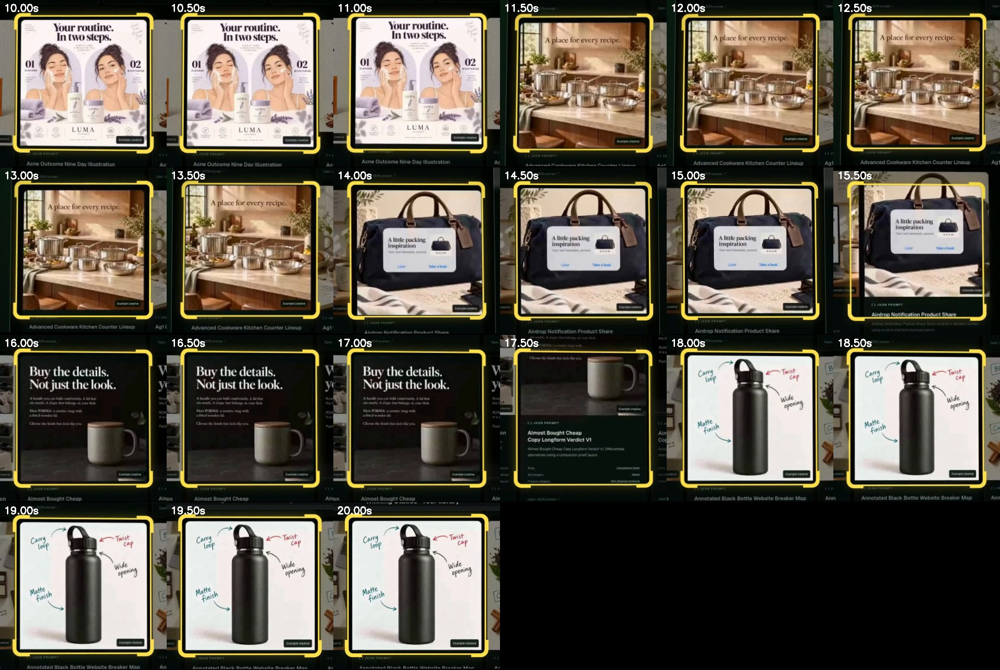

Motion redesign: style test
29 Oct 2026. Same screenplay, voice and words; new design and motion. The Winning Statics highlight boxes are now measured from the real dashboard tour frame by frame and snapped to each ad card (within 1 px). Approve this look and all 11 cuts get rebuilt with it, at 1.15x with the tech house track.
Approved and built: all 11 finals in this style.
Motion tests at 1.15x (voice only, no music yet)
Style frames


Box alignment check (stills every 0.5 s)
